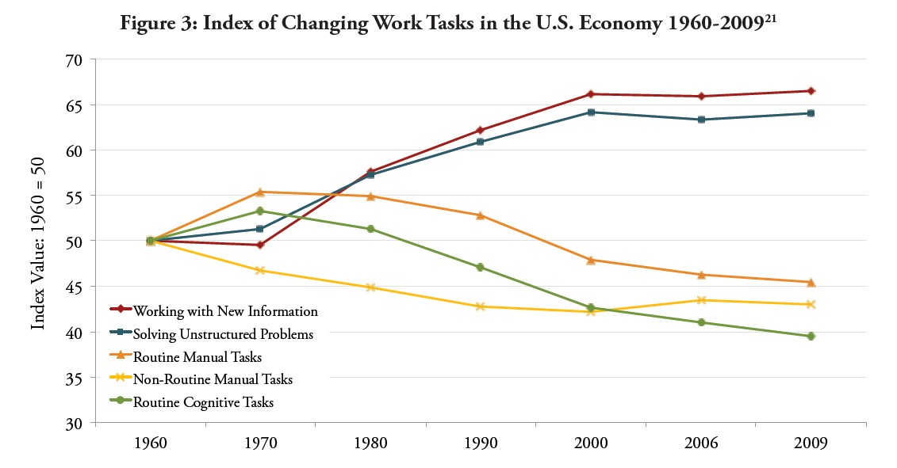

Dancing With Robots:
Human Skills for Computerized Work
The research paper “Dancing with Robots: Human Skills for Computerized Work” by Frank Levy and Richard J. Murnane was published in 2013 as part of Third Way’s NEXT series. In their paper, Levy and Murnane point out technology’s structural impact on the labour market, but also the limitations of computers and technology. The authors argue that humans possess certain abilities and skills that computers are not able to obtain. Therefore, those foundational skills must be taught to future generations, so that they will be working complementary with computers and not substituted. For people to acquire those skills, the paper highlights the role of the education system, which is in the view of the authors the focal point to handle today’s challenge of continuous computerization and inequality.
Technological progress has changed the economic environment substantially in the last decades. Many specific tasks were replaced by computers, others were offshored. Figure 2 illustrates this change. It compares the occupational distribution of 1979 and 2009. As we can see, there has been a strong decline in middle-class occupations such as Operators […], Production […] and Office […], while almost all other types of occupation, regardless of low or high-class, have increased.

To understand why only certain occupations are replaced, the authors name two conditions for a task to be substitutable by a computer: The Information and Processing Condition. The Information Condition states that the information needed to carry out a task is identifiable and processable for a computer. The Processing Condition states that the task itself can be narrowed down to specific rules for the computer to follow. If those two conditions hold, a task can easily be replaced by technology.
Levy and Murnane continue their analysis by defining five broad types of workplace tasks. First, Solving Unstructured Problems; those problems are not solvable by rule-based logic and require a flexible approach. Technology functions more as a complement for those tasks. Second, Working with New Information; those tasks generally consist of interpreting unfamiliar information or communicating this new information to others. Those tasks are also hard to substitute, because computers have difficulties to make sense of unknown information and lack communication skills. The third and fourth type are Routine Cognitive and Routine Manual Tasks. Those tasks consist of mental and physical tasks that follow simple rules and are thus easily substitutable by computers. Lastly, Non-Routine Manual Tasks consist of physical tasks that cannot be narrowed down into rules anymore, require a new approach for each individual task and will most likely not be substituted by computers.

Figure 3 shows how each of those types have developed until 2009 compared to the original distribution in 1960. Solving Unstructured Problems and Working with New Information has both increased drastically since 1960, while both Routine Manual and Routine Cognitive Tasks have decreased. Non-Routine Manual Tasks also decreased sharply in the first decades but has been approximately constant for the last 20 years. Those results go accord with the prediction based on the two conditions, as well as the developments of Figure 2.
People need to obtain foundational skills to carry out those tasks that have raised and will continue to raise in importance. The authors mention multiple examples throughout their paper of such skills, for instance common sense, cognitive complexity, metacognition and communication skills. According to Levy and Murnane, all those skills interlace to the fact that the knowledge required nowadays has become more abstract. Subsequently, a person’s income has become more and more dependent on their education level, which causes education to play a crucial role for upward mobility.
However, the public education system seems to fail to close the gap in cognitive and socio-emotional skills between children of low-income families compared to children from higher earning families. The authors argue that children from professional families enter school with more background knowledge and stronger vocabulary than other children, giving them a large advantage in acquiring those foundational skills.
Levy and Murnane see multiple problems with the current education system that cause many students to be left behind. The more complex foundational skills necessary require a change in how subjects are taught with more emphasis on conceptual understanding and problem-solving. The national policy No Child Left Behind (NCLB) - intended to improve the public education - implemented only state-wide academic standards with the incentive of setting those low in order to avoid sanctions for public schools. Instead, the authors mention a recent development called Common Core State Standards (CCSSs), which is supposed to create a common base among all states to tackle this problem.
Concluding, Levy and Murnane claim that we are going to face a labour market which is focused around three types of tasks: Solving Unstructured Problems, Working with New Information and Non-Routine Manual Task. The remaining tasks will either be substituted by technology or outsourced to other countries. Current and future generations need to acquire the foundational skills necessary to carry out those tasks, hence we need to extensively increase the percentage of people possessing those skills. This will reduce the relative supply of low-skilled labour and decrease wage inequality, which consequently would also improve equality of opportunity. At the same time future generations are being prepared for the changing labour market. Finally, the authors end their paper by introducing three approaches to achieve equal opportunity of acquiring foundational skills. Firstly, well-designed pre-school programs to close the gap in cognitive skills between children from families with different income. Secondly, putting more emphasis on the CCSSs to have an easily identifiable common standard for foundational skills. Thirdly, introducing various, different secondary school options to match each student’s best learning experience. Implementing those allows society to adapt to the ongoing technological progress and to improve the current situation of inequality.
Photo from: Unsplash
Original Article: Levy, F., and R. Murnane (2013): “Dancing with Robots: Human Skills for Computerized Work”, Third Way